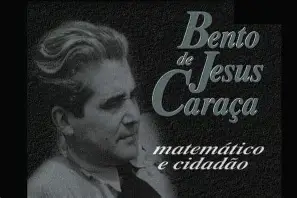

Bento de Jesus Caraça , nasceu em uma família de trabalhadores rurais e, desde cedo, demonstrou grande capacidade
intelectual. Ele aprendeu a ler aos cinco anos e, após concluir a escola primária, prosseguiu seus estudos no
Liceu Central de Pedro Nunes, em Lisboa. Em 1923, formou-se no Instituto Superior de Comércio, onde mais tarde
se tornaria professor.
Em 1927, foi nomeado professor extraordinário e, em 1929, professor catedrático da 1ª cadeira de Matemáticas
Superiores no Instituto Superior de Ciências Económicas e Financeiras (atualmente ISEG). Durante sua carreira,
ele fundou várias instituições e publicações voltadas para a matemática e a educação,
incluindo a"Gazeta de Matemática" e a "Biblioteca Cosmos"